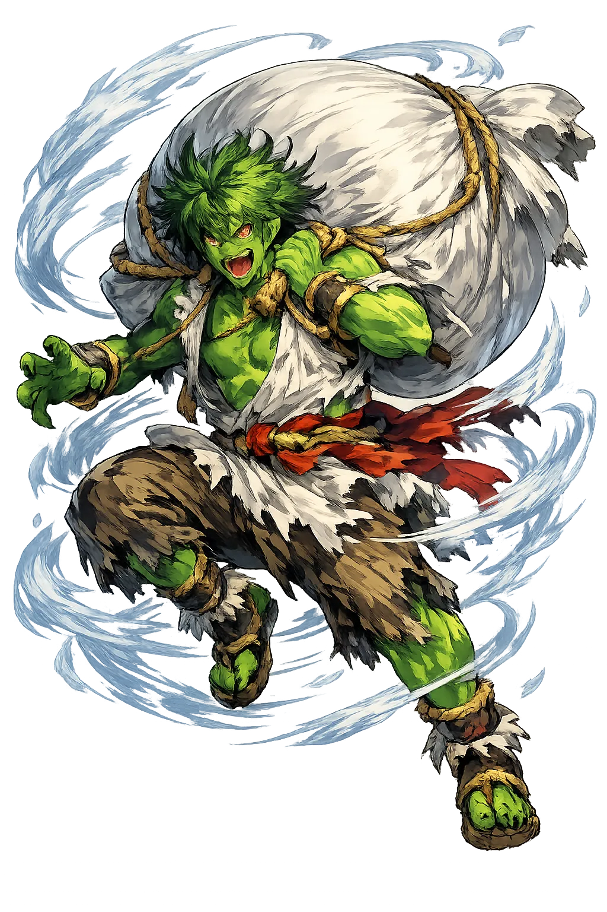
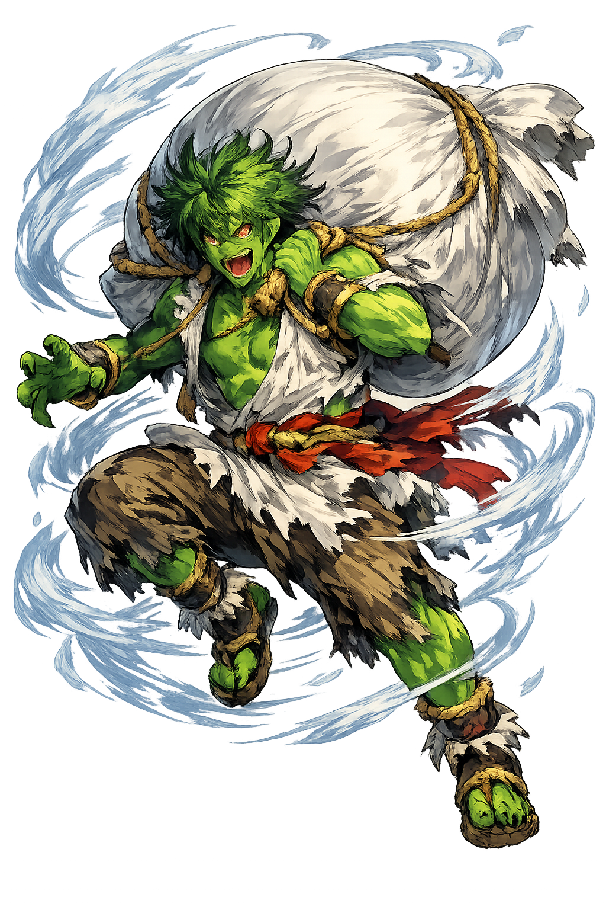

Unicode restoration and ASCII comparison
風神
The name in its original Japanese form. Fūjin (風神) is attested in the source tradition — “Wind god”. Its macron-length vowels carry the full phonetic and orthographic weight of the source tradition.
fujin
Reduced to plain fujin, the name loses everything that made it specific: macron-length vowels. What remains is an ASCII string that machines can parse but that no longer speaks with its original voice.
Fūjin
The Unicode restoration recovers what ASCII flattened. Fūjin restores macron-length vowels, returning the name to its original written dignity. The domain encodes to Punycode, but the browser displays the truth.
Fūjin.com → xn--fjin-v7a.com
The non-ASCII characters in Fūjin are encoded while the ASCII remains visible. To the DNS, it is Punycode. To humanity, it is Fūjin.
How Fūjin travels from ancient script to the modern URL
Sino-Japanese compound fū 'wind' + jin 'god, spirit'; a kami of wind and storms.
Wind, storms, and the elemental power of the air.
Hepburn Fūjin with macron is registrable in .com; the kanji form is not.
How Fūjin was spoken
Storms, Breath, Destruction, and Renewal
Fūjin is the wind made wild. In Japanese art he appears as a fierce demon, hair streaming, clad in a leopard-skin loincloth, carrying a vast bag of winds on his shoulders. When he opens it, gales tear through forests, scatter roofs, and flatten fields; when he closes it, the air grows still. He is one of the oldest kami in the Japanese pantheon, a destructive force that is also necessary for pollination, dispersal of seeds, and the cleansing of stale air.
He is the brother or counterpart of Raijin, the thunder god, and the two are often depicted together at temple gates, where their terrifying presence keeps danger away from sacred ground.
He carries a great sack (fūtaku) slung over his shoulders; opening it releases the winds of the world.
His fierce face and muscular body mark him as one of the powerful oni-like kami who protect temples.
He is paired with the thunder god at temple gates and in screen paintings, storm and wind as twin forces.
Beyond destruction, wind is the breath that moves pollen, carries clouds, and clears the air for new growth.
Stories of Fūjin
Fūjin's mythology is grounded in the creation narratives of the Kojiki and Nihon Shoki, in popular Buddhist iconography, and in the visual tradition of Japanese screen painting. He is both a primordial force and a temple guardian.
The wind kami are older than the name Fūjin. In the Kojiki's birth-of-the-kami sequence, Shinatsuhiko-no-mikoto, the wind deity, is born to Izanagi and Izanami among the elemental gods that follow the making of the islands. The Nihon Shoki adds its own etiology: Izanagi blows away the morning mist that wraps the new-made land, and from that breath the wind kami is born. The thunder kami, by contrast, are born from Izanami's corpse after her death in the birth of the fire god — neither wind nor thunder kami are products of Izanagi's later purification at the misogi. The demonic figure called Fūjin — leopard skin, wind-bag, streaming hair — is the later, Buddhist-inflected portrait of these older wind kami.
The wind kami appear in several episodes of the divine age. When the sun goddess Amaterasu withdrew into the cave, the winds stilled and the world grew dark. When she was lured out, life — including the movement of air — returned. Fūjin thus belongs to the same cosmic order governed by the sun and storm; his winds are part of the vitality that returns when divine harmony is restored.
In esoteric Buddhism the wind god is Fūten, one of the Twelve Devas (jūniten) who guard the directions; protector of the north-west, he adapts the Indian wind god Vāyu transmitted through the mandalas of esoteric ritual. He protects the Dharma by sweeping away obstacles and evil influences. Temples across Japan, including Sanjūsangen-dō in Kyōto and the Kennin-ji in Kyōto, house famous depictions of Fūjin and Raijin as muscular, wind-whipped guardians.
Fūjin is the god of the air we cannot see but cannot live without. His bag of winds contains both destruction and renewal: the gale that uproots trees also scatters seeds, the storm that sinks ships also clears the sky. He is a reminder that the atmosphere is not empty space but a living force.
Enter Extended Lore